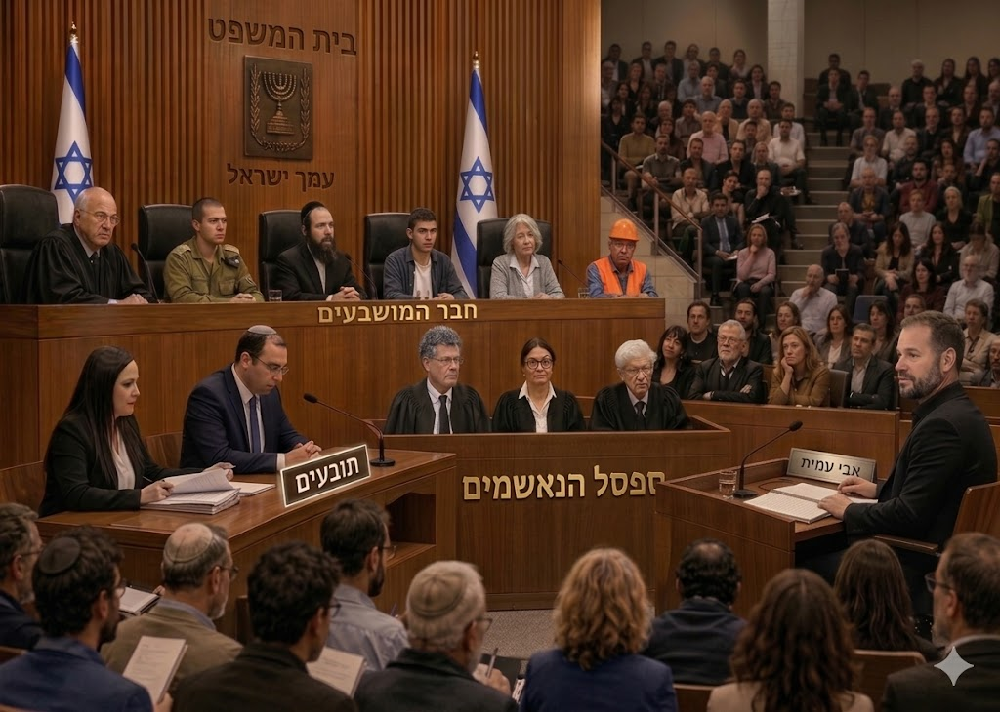
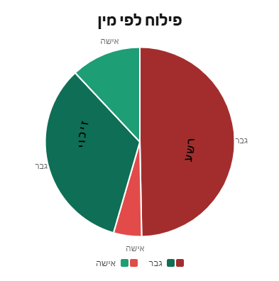
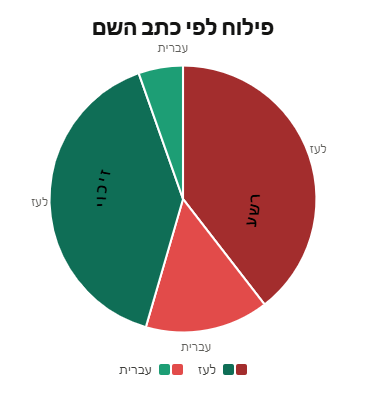
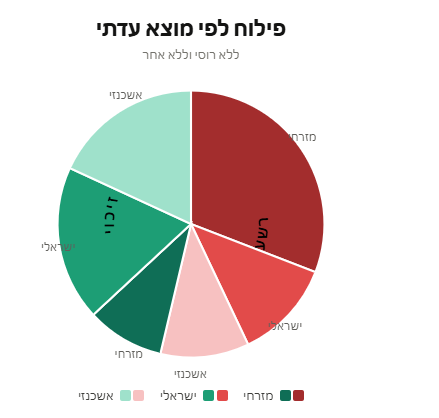

מדינת ישראל מעמידה למשפט את מערכת המשפט שלה
בספסל הנאשמים: בג״ץ

פתיח רעיוני
משחר ההיסטוריה, כל חברה אנושית בנתה לעצמה מערכת משפט . מחוקי חמורבי בבבל העתיקה, דרך שופטי המקרא, ועד בתי המשפט החוקתיים של ימינו — המשפט היה תמיד יותר ממנגנון טכני לפתרון סכסוכים . הוא היה ניסיון להעמיד כלל מעל כוח, סדר מעל נקמה, ועיקרון מעל שרירות .
אבל מערכת המשפט היא גם מן המוסדות הראשונים שנקלעים למשבר כאשר חברה מאבדת אמון בעצמה . כאשר הציבור חדל לראות בשופטיו סמכות הוגנת, הוא עלול לחפש לא רק שופטים אחרים, אלא משטר אחר: ישיר יותר, כוחני יותר, סמכותני יותר . כאן טמון הסיכון הישראלי הנוכחי: חלק מן המתנגדים לבג״ץ ולמערכת המשפט דורשים להרוס או לעקר את המערכת הקיימת, אך אינם מציעים חלופה ריאלית, יציבה ומוסכמת שתוכל לזכות באמון רוב הציבור .
במובן הזה, מצבה הנוכחי של ישראל מהדהד משהו מסוף תקופת השופטים במקרא . לפי הסיפור שהתקבע בזיכרון היהודי, העם מאס בשופטיו וביקש לו מלך . לא ברור שהעם כולו אכן מאס; ההיסטוריה נכתבת לא פעם בידי המנצחים ובידי מי שמנסחים בדיעבד את משמעות האירועים . אבל כך התקבע הסיפור: אמון מתערער, סמכות שיפוטית נחלשת, וגעגוע גובר ליד חזקה שתסדר את המציאות .
על הרקע הזה, שתי סצנות פייסבוק מתוך “זמן אמת” בכאן 11 מקבלות משמעות רחבה בהרבה מוויכוח טלוויזיוני . מדינת ישראל מעמידה למשפט את מערכת המשפט שלה — ובספסל הנאשמים: בג״ץ . השאלה אינה רק אם בג״ץ טעה בפסק דין כזה או אחר, אלא האם הציבור הישראלי עדיין רואה בו שומר סף של הסדר הדמוקרטי, או שריד של סדר ישן שממנו יש להשתחרר .
אולם המשפט הפייסבוקי
שתי הסצנות אינן משפט פורמלי . אין בהן כתב אישום רשמי, אין ראיות קבילות, אין סדרי דין, ואין שופט המכריע לפי חוק . ובכל זאת, מבחינה ציבורית הן מתפקדות כמשפט לכל דבר .
במרכז האולם עומד הנאשם בג״ץ — לא רק כאוסף פסקי דין, אלא כסמל . בעיני חלק מן הישראלים הוא שומר הסף האחרון של הדמוקרטיה; בעיני אחרים הוא מוקד כוח בלתי נבחר, המתערב בהחלטות מלחמה, ביטחון ושלטון מבלי לשאת באחריות לתוצאות .
מולו ניצבים הקטגורים . ישכה בינה ושמחה רוטמן אינם טוענים בדיוק אותה טענה, אך שניהם מייצגים כתב אישום רחב: בג״ץ, יחד עם היועמ״שים, הפצ״ריה והמשפטנים במערכת הביטחון, יצר לשיטתם אקלים שבו צה״ל והדרג המדיני היססו, נבלמו, או נאלצו לפעול בתוך גבולות משפטיים שהחלישו את ההרתעה .
מולם ניצב אבי עמית, בתפקיד הסניגור . הוא אינו מגן על בג״ץ מתוך עמדה רגשית, אלא מתוך דרישה בסיסית של משפט: הראו את הראיה . איפה פסק הדין? איפה ההוראה? מי נתן את הפקודה? האם זו הייתה החלטה של בג״ץ, או החלטה של הצבא, הרמטכ״ל, הקבינט או הדרג המדיני?
הקהל הפייסבוקי אינו יושב בשקט . הוא מוחא כפיים, מתפרץ, מצטט, מעיד, דורש חקירה, מזכה ומרשיע . חלק מן המושבעים — כלומר המגיבים — הם צופים ביציע; חלקם עדים המביאים ניסיון אישי, שירות צבאי או קריאת פסקי דין; וחלקם הופכים לחבר מושבעים ממש: מי שפוסק אם הנאשם בג״ץ אשם או זכאי .
לכן אין כאן רק ניתוח תגובות . יש כאן ניסוי ציבורי קטן: משפט שבו הנאשם הוא מוסד, התביעה פוליטית, ההגנה עיתונאית, העדים אזרחים, והכרעת הדין ניתנת בלייקים, במושבעים ובקריאות מן היציע .
כתב האישום
כתב האישום נגד הנאשם בג״ץ בנוי משלוש שכבות .
השכבה השנייה מתוחכמת יותר: גם אם בג״ץ לא נתן הוראה ישירה, עצם הדיון שלו בעתירות ביטחוניות יצר לחץ . הצבא, הפצ״ריה והדרג המדיני הבינו מה מצופה מהם, שינו נהלים מראש, והתיישרו עם רוח משפטית עוד לפני שניתן פסק דין מחייב .
השכבה השלישית היא תודעתית: הנאשם בג״ץ הפך בעיני חלקים מן הציבור לסמל של סדר ישן, אליטיסטי ומשפטני, המחליף את רצון העם ברצון השופטים . בשכבה הזאת כבר לא חשוב רק מה בג״ץ פסק בפועל . עצם קיומו כשחקן בעל סמכות הוא לב הבעיה .
אבי עמית מנסה להחזיר את הדיון לשכבה הראשונה: מה הראיה הישירה? ישכה בינה ושמחה רוטמן מושכים אותו לשכבות השנייה והשלישית: לא רק מה נפסק, אלא מה הייתה רוח המערכת, ומה הייתה עצם הלגיטימיות של בג״ץ לדון . ומכאן מתחיל המשפט.
פרק א׳: ישכה בינה, אבי עמית, והעדויות מן הגדר
הסצנה הראשונה מתמקדת בטענה שהוראות הפתיחה באש ליד גדר עזה כבלו את ידי החיילים, החלישו את ההרתעה, ואפשרו לחמאס ללמוד את גבולות התגובה הישראלית .
ישכה בינה מגיעה לאולם כקטגורית . היא מביאה עדויות חיילים, שלפיהן חיילים נמנעו מלירות במי שהתקרבו לגדר משום שקיבלו הוראות מלמעלה . מבחינתה, “מלמעלה” אינו רק שרשרת פיקוד צבאית, אלא מערכת שלמה: בג״ץ, יועמ״שים, פצ״ריה, דין בין־לאומי, חוות דעת הומניטריות ותרבות משפטית שחלחלה אל שדה הקרב .
אבי עמית אינו מכחיש בהכרח שהיו הוראות ריסון . הוא גם אינו מבטל את תחושת החיילים . אבל הוא עוצר בנקודה הקריטית: גם אם חיילים קיבלו הוראות — מי נתן אותן? מפקד האוגדה? אלוף הפיקוד? הרמטכ״ל? שר הביטחון? הקבינט? עצם העובדה שחייל אומר “קיבלתי הוראה מלמעלה” אינה מוכיחה שההוראה ירדה מבג״ץ .
זו נקודת הפיצול הראשונה במשפט: הקטגוריה מביאה עדות על ריסון; הסנגוריה דורשת הוכחה למקור הריסון . אבי עמית מחזק את ההגנה באמצעות גורמים ביטחוניים המזוהים עם הימין, שראו בהחלטות סביב הגדר החלטות אסטרטגיות של מדינת ישראל, ולא כפייה של בג״ץ . בכך הוא אינו אומר “לא היה ריסון”; הוא אומר: ייתכן שהיה ריסון, אך ייתכן שהוא נבע משיקול צבאי־אסטרטגי, לא מהוראה משפטית .
מבחינה משפטית, זהו מהלך הגנה חזק . עדויות החיילים עשויות להוכיח שהייתה מדיניות זהירה ליד הגדר . הן אינן מוכיחות לבדן שהנאשם בג״ץ הוא מקור המדיניות הזאת . באולם הפייסבוקי, לעומת זאת, הדיון אינו נשאר משפטי בלבד . עבור חלק מן הקהל, עצם קיומן של עדויות חיילים מספיק כדי להרשיע . עבור אחרים, הדרישה של עמית לשרשרת סיבתית היא לב המשפט .
הכרעת חבר המושבעים בפרק א׳| תוצאה | מספר מושבעים |
|---|---|
| זיכוי הנאשם בג״ץ | 27 |
| הרשעת הנאשם בג״ץ | 24 |
בפרק א׳, חבר המושבעים זיכה את הנאשם בג״ץ בזיכוי דחוק . אך הדיון נותר פתוחה, משום שהטענה על “ריסון משפטי עקיף” המשיכה לרחף באולם .
פרק ב׳: שמחה רוטמן, אבי עמית, והמשפט על עצם הדיון
בפרק ב׳ נכנס לאולם קטגור אחר: שמחה רוטמן . אם בפרק א׳ ישכה בינה ביקשה להוכיח שהוראות הפתיחה באש ליד הגדר הושפעו מן המערכת המשפטית, רוטמן מעביר את המשפט למישור עקרוני יותר: מדוע בג״ץ בכלל יושב ודן בעניינים של מלחמה, חשמל, דלק, סיוע הומניטרי ועזה?
רוטמן מקריא מתוך פסק דין העוסק באספקת חשמל ודלק לרצועת עזה, ומנסה לבנות ממנו את כתב האישום . לשיטתו, גם אם בג״ץ לא חייב את מדינת ישראל להעביר חשמל בכמות בלתי מוגבלת, עצם העובדה שהוא קבע גבולות, ניסח חובות ועסק בשאלה כמה מותר או אסור לספק — הופכת אותו לשחקן בעל השפעה ממשית .
אבי עמית מחזיר את הדיון לקרקע העובדתית: מי החליט לספק חשמל לרצועת עזה? לטענתו, ההחלטה הייתה של הדרג המדיני . הממשלה היא שקבעה את המדיניות; בג״ץ לא החליף אותה ולא ניהל במקומה את אספקת החשמל .
אבל כאן רוטמן מציב קושי עמוק יותר . הוא אינו מסתפק בשאלה “מי חתם על ההחלטה?” . הוא שואל: אם לשופטים לא הייתה השפעה, מדוע הם דנו בכך מלכתחילה? מה משמעותה של ערכאה שיפוטית היושבת על סוגיות ביטחוניות, כותבת, מפרשת ומסמנת גבולות, גם אם בסוף היא אינה נותנת צו ישיר?
זו נקודת הכוח של פרק ב׳ . כתב האישום כבר אינו נשען רק על פקודה, מסמך או הוראת פתיחה באש . הוא נשען על טענה מוסדית: הנאשם בג״ץ משפיע לא רק כאשר הוא פוסק, אלא גם כאשר הוא דן; לא רק כאשר הוא מורה למדינה לפעול, אלא גם כאשר הוא מבהיר למדינה מה ייחשב סביר, מידתי או חוקי . אבי עמית מבקש ראיה להחלטה מחייבת . רוטמן מבקש מהקהל לראות בעצם הדיון ראיה להשפעה .
הכרעת חבר המושבעים בפרק ב׳| תוצאה | מספר מושבעים |
|---|---|
| הרשעת הנאשם בג״ץ | 67 |
| זיכוי הנאשם בג״ץ | 49 |
בפרק ב׳ התמונה השתנתה: מול רוטמן, חבר המושבעים נטה בבירור יותר להרשעת הנאשם בג״ץ . הקטגוריה הצליחה להעביר את מרכז הכובד מן השאלה “מה נפסק בפועל” אל השאלה “מדוע בג״ץ בכלל יושב שם” .
סיכום שני הפרקים: פסק הדין הציבורי
שתי הסצנות אינן מציגות אותו משפט בדיוק . בפרק א׳, הנאשם בג״ץ נשפט על טענה צבאית־מבצעית . בפרק ב׳, המשפט עבר למישור אחר - המישור המוסדי . שמחה רוטמן העמיד את הנאשם בג״ץ לדין על עצם נוכחותו בזירות שבהן מתקבלות החלטות ביטחוניות .
לכן פרק ב׳ היה מסוכן יותר מבחינת הסנגוריה . מול טענה ישירה אפשר לבקש מסמך . מול טענה מוסדית־תודעתית קשה יותר להתגונן, משום שהיא אינה תלויה בפסק דין אחד . היא נשענת על תחושה רחבה: שמישהו לא נבחר ישב מעל הדרג הנבחר, השפיע עליו, ואז לא נשא באחריות לתוצאות .
הכרעה כוללת בשני הפרקים| תוצאה סופית | מספר מושבעים |
|---|---|
| הרשעת הנאשם בג״ץ | 91 |
| זיכוי הנאשם בג״ץ | 76 |
המספרים הללו אינם מדגם מייצג של הציבור הישראלי . הם אינם סקר . אבל הם כן מלמדים כיצד נראה אולם מסוים, ברגע מסוים . ובאולם הזה, הנאשם בג״ץ עמד לדין — והרוב בקרב המושבעים נטה לראות בו שותף לאחריות .
פרופיל חבר המושבעים: מי ישב באולם?



בסיכום שני הפרקים, נשאלת השאלה מי ישב בחבר המושבעים . ההתפלגויות מצביעות על כך שהאולם לא היה ניטרלי לחלוטין ולאו דווקא מייצג את כלל החברה בישראל . זהו חבר מוחשבעים בעל פרופיל חברתי־זהותי של פוליטיקת הזהויות בעיקר, שאלת האמון בנאשם בג״ץ אינה רק שאלה של עובדות, אלא גם בעיקר שאלה של זהות, שייכות, חשדנות כלפי המימסד והאליטות הישנות מחד ומאידך תחושת בעלות על המדינה, ויחס אוהד למוסדות השלטון בתנאי שהם מהשבט שלך.
לקראת פסק הדין הרחב יותר - לאן ישראל צועדת?
בסופו של דבר, השאלה אינה רק אם הנאשם בג״ץ אשם במחדל 7 באוקטובר . השאלה היא מה קורה לחברה שמעמידה את שופטיה למשפט בלי להסכים מראש על כללי המשפט . מה נחשב ראיה? מה נחשב אחריות? האם עצם דיון הוא התערבות? האם השפעה עקיפה היא אשמה? והאם אפשר להרוס מוסד בלי להציע תחתיו חלופה מוסכמת, יציבה וריאלית?
כאן חוזרת שאלת הפתיח . חברה שמאבדת אמון בשופטיה עשויה לבקש מלך . אך ההיסטוריה מלמדת שמלך אינו בהכרח פתרון למשבר משפטי . לעיתים הוא רק שם אחר לריכוז כוח, לצמצום ביקורת, ולהחלפת מערכת מורכבת במרכז סמכות יחיד .
המשפט הציבורי הזה עדיין לא הסתיים . הנאשם בג״ץ יושב על ספסל הנאשמים . הקטגורים ממשיכים לטעון . הסנגורים דורשים ראיות . העדים עולים ויורדים . הקהל באולם סוער .
והשאלה הגדולה נותרת פתוחה: האם מדינת ישראל מבקשת לתקן את מערכת המשפט שלה או להחליף אותה בכוח אחר, חד משמעי יותר, מהיר יותר, ומסוכן הרבה יותר .